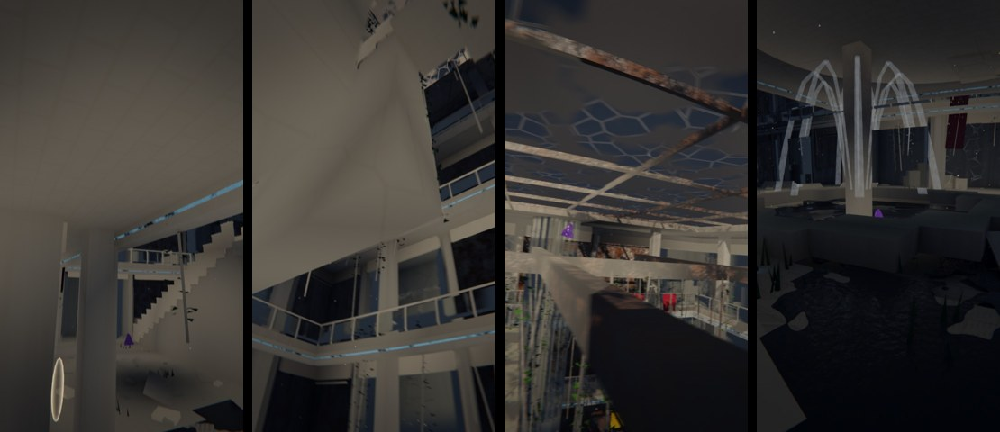
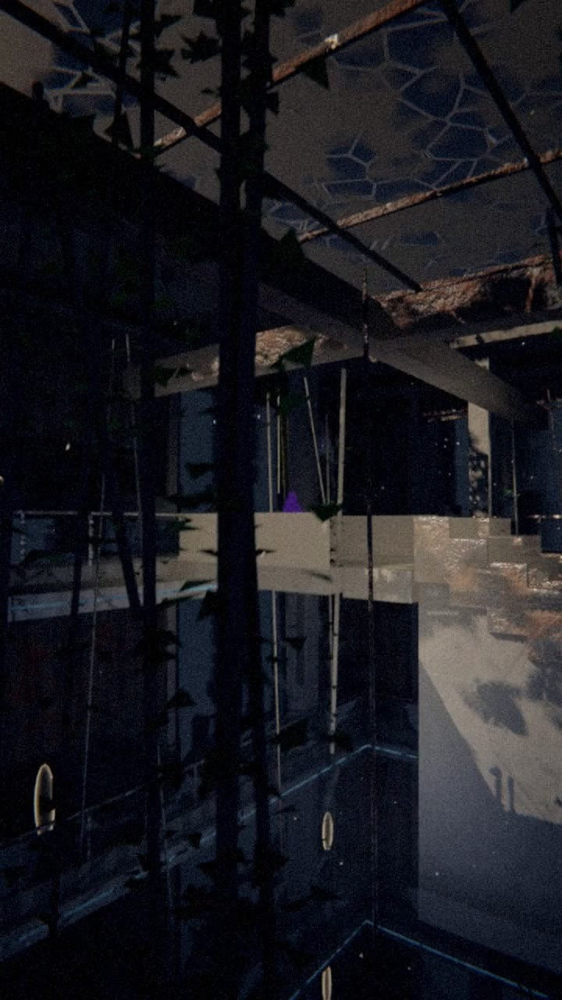
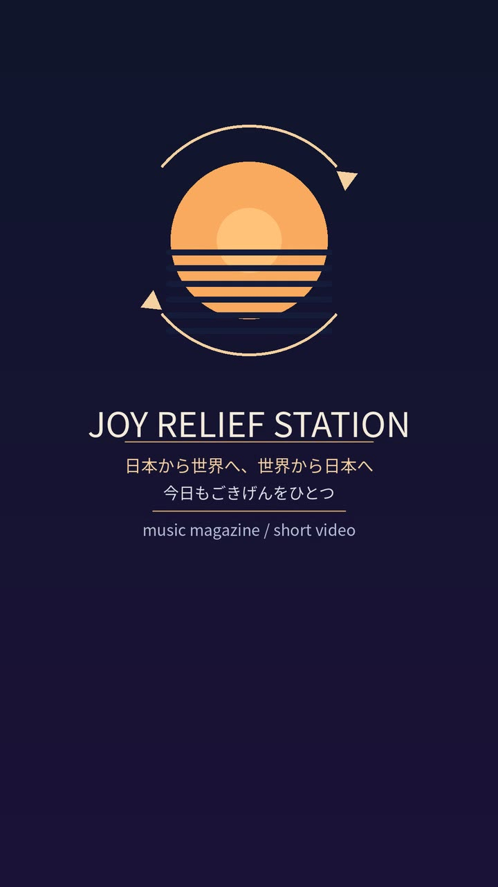
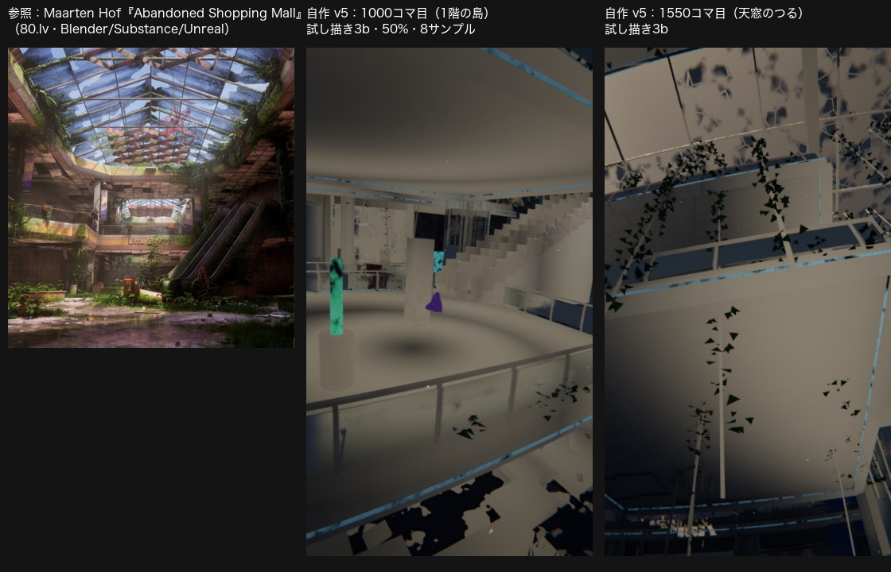
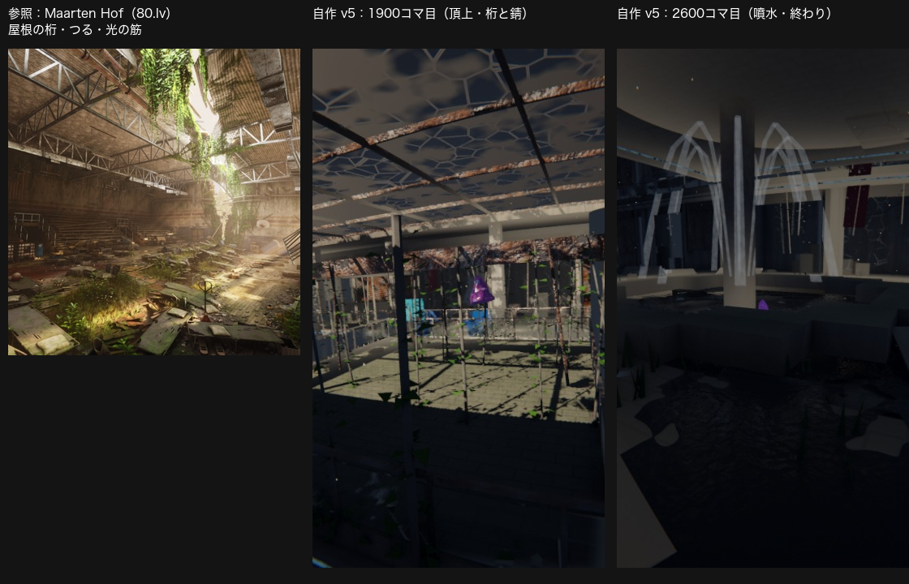

共有資料の一覧 ／ 確認ページ #204017 宇宙うんこ v5：廃墟モール × 沈める寺（Fable・赤入れ反映）
#204017 宇宙うんこ v5：廃墟モール × 沈める寺（Fable・赤入れ反映）
2026-11-01 実装・main合流・本番(GitHub Pages)反映まで実測確認
2050年代の超未来モールの廃墟を、宇宙うんこ（グミ）がドビュッシー「沈める寺」に合わせて跳ねながら FPV で抜ける1本（115秒・縦・ワンテイク）。動きは曲の音符の位置で跳ね（等間隔なし）、静かな所は漂い、ff の頂点で天窓の桁まで一番大きく上がり、終わりは噴水の底へ沈む。舞台は5層の吹き抜け・各階のガラス手すり・止まった苔のエスカレーター・シャッターとショーウィンドウ・看板の残骸・案内板・フードコートの椅子・天窓・噴水跡・大通り。最後の3秒はたまごさんの実物のケツロゴ（Drive の jrs_logo_endcard.png）。曲は録音を使わず工場で合成。自己採点は 62点（たまごさんの目は20点辛い前提・80点未満＝まだ磨き中）。負けている所：①写真由来の質感が無く日なたの壁が平ら ②葉が三角形の塊 ③間接光が無い。fal の店内静止画は残高切れで作れず（0円）。
② 数字
115秒尺（曲111秒＋余韻4秒）
87跳ねる回数（曲の音符の位置）
0円かかったお金（fal は残高切れで未使用・描画は GitHub Actions 無料枠）
62点自己採点（80点未満＝磨き中）
本番のコマと参照作との比較
本番のコマ（30秒＝吹き抜けを上る／63秒＝大通り／75秒＝頂点の桁／108秒＝噴水）
70秒目：天窓の下、つると桁、グミ（紫）
最後の3秒：たまごさんの実物のケツロゴ
参照作との比較1（Maarten Hof の廃墟モール vs 自作）
参照作との比較2（屋根の桁・噴水）
④ 押せるリンク
⑤ 何をどう確かめたか
| 確認項目 | 結果 |
|---|
| 曲は沈める寺を自作合成（録音・他人のMIDIなし） | hits.json 87当たり・oto.wav 115秒 |
| 跳ねが等間隔でない（音符の位置） | 当たりの間隔は 0.37〜7.3秒でばらつく |
| 一目でモールと分かる要素 | 吹き抜け・手すり・エスカレーター・シャッター・看板・案内板・椅子・天窓・噴水 |
| カメラの向きの速さ上限（v3.1 の 80度/秒より穏やか） | 45度/秒・傾き最大5度 |
| ケツロゴはたまごさんの実物 | Drive の jrs_logo_endcard.png をそのまま |
| 文字なし・卵ロゴなし・ちよさんの絵なし | 使っていない |
| fal の店内静止画（深度制御） | 残高切れ（403）で作れず・0円 |
| 自己採点 80点以上 | 62点（磨き中） |